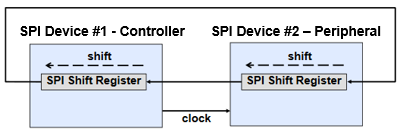
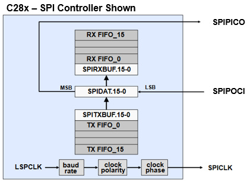
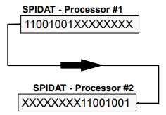

Serial Peripheral Interface (SPI)#
The SPI is a high-speed synchronous serial port that shifts a programmable length serial bit stream into and out of the device at a programmable bit-transfer rate.
It is typically used for communications between processors and external peripherals, and it has a receive and transmit FIFO for reducing servicing overhead.
How does it work?#
During data transfers, one SPI device must be configured as the transfer controller, and all other devices configured as peripherals. The controller drives the transfer clock signal for all peripherals on the bus. SPI communications can be implemented in any of three different modes:
Controller sends data, peripheral sends dummy data
Controller sends data, one peripheral sends data
Controller sends dummy data, one peripheral sends data
SPI Data Flow#
Data to be transmitted is written directly to the SPIDAT register, and received data is latched into the SPIBUF register for reading by the CPU. This allows for double-buffered receive operation, in that the CPU need not read the current received data from SPIBUF before a new receive operation can be started. However, the CPU must read SPIBUF before the new operation is complete or a receiver overrun error will occur. In addition, double-buffered transmit is not supported: the current transmission must be complete before the next data character is written to SPIDAT or the current transmission will be corrupted.
The Controller can initiate a data transfer at any time because it controls the SPICLK signal. The software, however, determines how the Controller detects when the Peripheral is ready to broadcast.
In its simplest form, the SPI can be thought of as a programmable shift register. Data is shifted in and out of the SPI through the SPIDAT register. 
SPI Block Diagram#

Note:
The block diagram showcases a SPI module with a 16 level deep FIFO. For your specific device’s FIFO level refer to the Technical Reference Manual
SPI Transmit / Receive Sequence#
Peripheral writes data to be sent to its shift register (SPIDAT)
Controller writes data to be sent to its shift register (SPIDAT or SPITXBUF)
Completing Step 2 automatically starts SPICLK signal of the Controller
MSB of the Controller’s shift register (SPIDAT) is shifted out, and LSB of the Peripheral’s shift register (SPIDAT) is loaded
Step 4 is repeated until specified number of bits are transmitted
SPIDAT register is copied to SPIRXBUF register
SPI INT Flag bit is set to 1
An interrupt is asserted if SPI INT ENA bit is set to 1
If data is in SPITXBUF (either Peripheral or Controller), it is loaded into SPIDAT and transmission starts again as soon as the Controller’s SPIDAT is loaded
SPI Data Justification#
Since data is shifted out of the SPIDAT register MSB first, transmission characters of less than 16 bits must be left-justified by the CPU software prior to being written to SPIDAT.
Received data is shifted into SPIDAT from the left, MSB first. However, the entire 16 bits of SPIDAT is copied into SPIBUF after the character transmission is complete such that received characters of less than 16 bits will be right-justified in SPIBUF. The non-utilized higher significance bits must be masked-off by the CPU software when it interprets the character. For example, a 9 bit character transmission would require masking-off the 7 MSB’s.

SPI Summary#
Synchronous serial communications
Two wire transmit or receive (half duplex)
Three wire transmit and receive (full duplex)
Software configurable as controller or peripheral
C28x provides clock signal in controller mode
Data Length programmable from 1-16 bits
125 different programmable baud rates
Resources#
Feedback
Please provide any feedback you may have about the content within C2000 Academy to: c2000_academy_feedback@list.ti.com